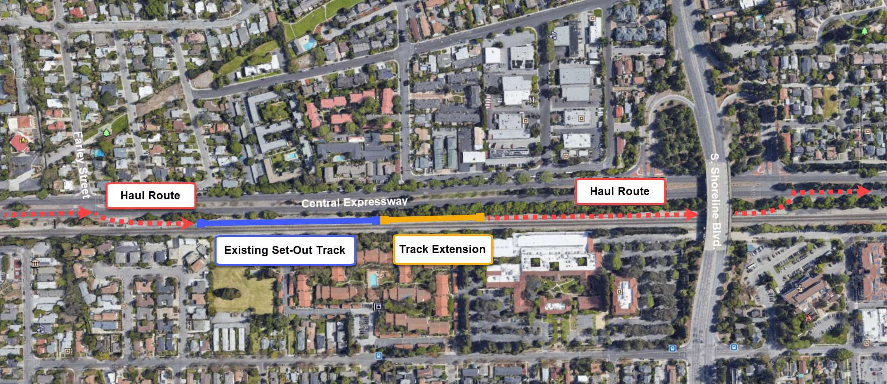
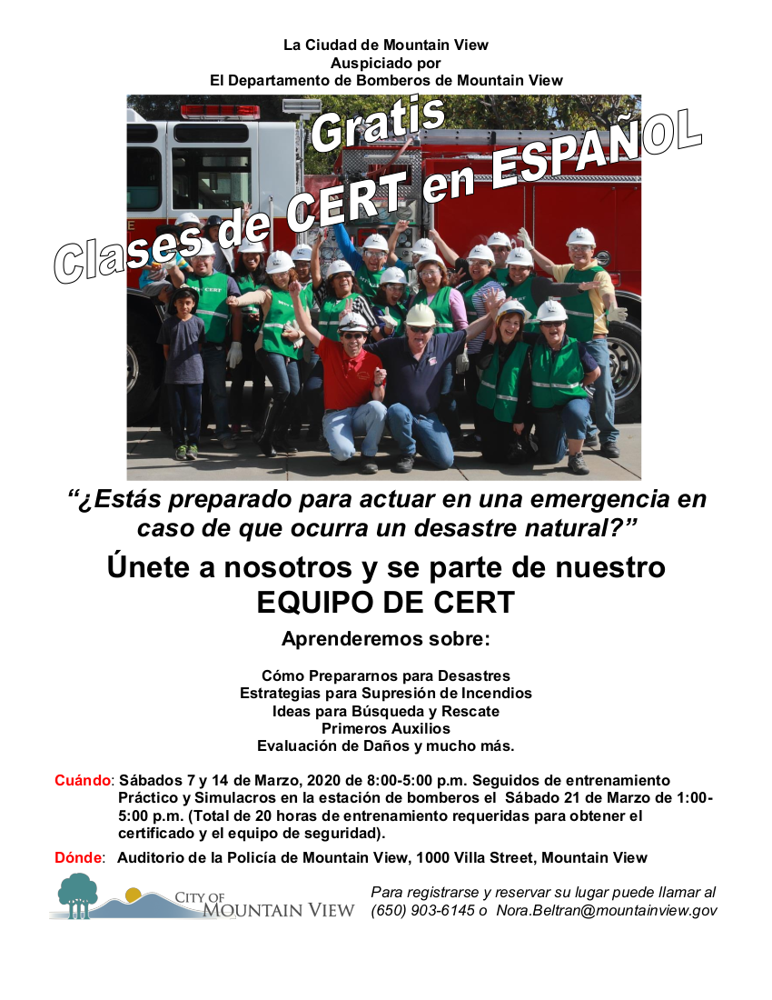

<section>
    <div class="row">
		<div class="columns small-12 hide-for-medium">
			{% include announce_menu.html %}
		</div>
		<div class="left-subnav medium-3 columns hide-for-small-only" data-sticky-container>
			<nav class="columns sticky" data-sticky data-top-anchor="positions" data-btm-anchor="clsepa" data-sticky-on="medium">
				<div id='nav-magellan' data-magellan>
					{% include announce_menu.html %}
				</div>
			</nav>
		</div>
      <div class="large-9 columns">
		<h1>Announcements</h1>

		<h4 id="caltrain">Caltrain Electification</h4>
		<p>Please join Caltrain staff for a community meeting about Caltrain Electrification. Staff will provide information about upcoming construction activities that will be occurring in Mountain View.</p>
		<p><b>Meeting Details: </b><br>Thursday, January 23 from 6:00-7:00 p.m. <br>Mountain View City Hall Council Chambers <br>500 Castro St. <br>Mountain View </p>
		<p>Since fall 2018, they have been working on tree pruning/removal, utility relocation, and foundation installation. Over the next few months, crews will continue foundation installation and begin the installation of poles along the rail corridor in Mountain View. The meeting will provide an opportunity for residents to learn more about the project, including the scope and schedule of upcoming construction activities. Please visit <a href="https://calmod.org/get-involved/" target="_blank">www.calmod.org/get-involved</a> to sign-up for weekly construction updates. </p>
		<p>In Summer 2018, Caltrain began performing work along the railroad corridor in Mountain View. </p>
		<p>The activities during this time included locating underground utilities, testing soil conditions, inspecting signal/communication equipment, potholing, and pruning/removing trees in preparation for the installation and operation of the Overhead Contact System that will power electric trains. </p>
		<p>Caltrain crews will be extending the existing set-out track approximately 500 feet in order to accommodate on-track equipment required for Caltrain Electrification.  The current set-out track is between Farley Street and South Shoreline Boulevard in Mountain View.  Construction will require a staging area for foundation installation, pole installation, construction material and pole delivery and storage as well as for loading and unloading of train cars. The loading and unloading of construction train cars and equipment will require the use of trucks, loading of construction trains and occasional use of backup alarms. Staging is expected to begin in October 2019 with construction occurring over a 8-12 month period. </p>
		<p>Vehicles will enter the staging area off of Central Expressway at Farley Street.  Egress will occur south of South Shoreline Boulevard back onto the Central Expressway. </p>.
		<h5>CONSTRUCTION AREA MAP</h5>
		<br>
		<hr>

		<h4 id="hill">Join Sen. Hill for Java with Jerry on 1/25 in Mountain View</h4>
		<p>Please join Senator Jerry Hill for a cup of coffee and conversation at "Java with Jerry." Bring your ideas, questions, and concerns about legislative issues affecting the community.</p>
		<p>Clocktower Coffee Roasting Company <br>Saturday, January 25, 2020 <br>9:00 am - 10:00 am <br>205 E. Middlefield Road, Mountain View, CA </p>
		<p>No RSVP or appointment necessary. Coffee will be provided at no taxpayer expense. </p>
		<hr>

		<h4 id="rapidresponse">Rapid Response Network Trainings in January in Santa Clara County</h4>
		<p>The Rapid Response Network helps to protect our undocumented neighbors from ICE, by showing up to witness and document ICE raids as they occur. When evidence of ICE's unconstitutional tactics is collected, it can help overturn deportation cases. RRN volunteers also search neighborhoods following a raid report to see if ICE is still there, so that we can let people know when they can safely leave their houses again to go to work and school. If you live or work in Santa Clara County, please consider signing up to be a part of the Rapid Response Network. </p>
		<p>Lots more volunteers are needed for this role around the county. The next training in Santa Clara County: </p>
		<p>SATURDAY, January 25, 10am-12pm at Casa de Clara, 318 N. 6th St., San Jose 95112. </p>
		<p>Please sign up for these trainings by sending email to <a href="mailto:carols@sacredheartcs.org" target="_blank">carols@sacredheartcs.org</a> - please give your name and email address and specify which training/s you wish to attend. </p>
		<hr>

		<h4 id="homeless">Santa Clara County Community Plan to End Homelessness Community Meeting</h4>
		<p>Based on feedback from community members, service providers, people with lived experience of homelessness, businesses, and other stakeholders, a draft plan is now ready to be shared. Hear more about strategies, services, and resources included in the draft plan, and provide feedback for implementing the plan.</p>
		<p><b>When:</b> Monday, January 27th from 6:00pm-8:00pm <br><b>Where:</b> Roosevelt Community Center (901 E. Santa Clara St., San Jose, CA 95116) <br><b>Please register here:</b> <a href="https://scccommunitymeeting.eventbrite.com" target="_blank">https://scccommunitymeeting.eventbrite.com</a></p>
		<p>If you are unable to attend the meeting, your feedback on the draft plan is still appreciated. The plan will be posted publicly in January and a link will be shared ss soon as it is available. </p>
		<p>Questions? Contact communityplanscc@homebaseccc.org or 415-788-7961 ext: 305</p>
		<p>This event is hosted by the Santa Clara County Continuum of Care, in partnership with the City of San José, the County of Santa Clara Office of Supportive Housing, Destination:Home, and other community stakeholders.</p>
		<hr>

		<h4 id="cool">Cool Block</h4>
		<p><b>Mountain View residents! Something big is coming to a block near you! </b></p>
		<p>Start 2020 off right with a fresh commitment to making your community and the planet a better place. The City of Mountain View is launching a NEW program for residents, and we’d love your participation. The <a href="https://coolblock.org/" target="_blank">Cool Block</a> program focuses on three main themes: disaster preparation and resilience, sustainability, and community building.</p>
		<p>If you’re interested in any of these topics, come to an <a href="https://www.eventbrite.com/e/cool-block-information-session-tickets-86055302727" target="_blank">information session</a> to learn more about the program and how to get involved. Over about 5 months, Cool Block consists of 8 meetings with your neighbors to discuss a variety of topics, work on action steps together, ask questions, prepare for emergencies, and get to know your immediate neighbors. </p>
		<p>Information Sessions <br>(tentative dates, subject to change)</p>
		<ul>
		<li>Monday, January 13, 6:30-8pm</li>
		<li>Wednesday, January 22, 6:30-8pm</li> 
		<li>Wednesday, January 29, 6:30-8pm </li>
		</ul>
		<p>Learn more about Cool Block <a href="https://coolblock.org/" target="_blank">here</a>, or <a href="mailto:sustainability@mountainview.gov">email us</a>. <a href="https://www.eventbrite.com/e/cool-block-information-session-tickets-86055302727" target="_blank">RSVP to a meeting here</a>!</p>
		<hr>

		<h4 id="women">Office of Women’s Policy Civic Engagement Mini-Grants – Round 2 now open!!</h4>
		<p>A second round for applications is open as of December 16, 2019 through February 28, 2020. As part of the commemoration of the upcoming 100th anniversary of the Women’s Suffrage movement, the Santa Clara County Office of Women’s Policy (OWP) will offer $75,000 in mini-grants to Santa Clara County residents who want to organize their communities to promote civic engagement and participatory democracy in honor of the legacy created by the women who fought for the 19th amendment.</p>
		<p>These mini-grants are intended for community members and groups planning activities, events and/or projects promoting democracy as it relates to women’s suffrage and the continuing need for women, girls, and female-identified individuals to actively participate, support, and promote their inclusion in a democratic system. The amount of the mini-grants will range from $200 - $2,000 and will be disbursed to various groups, including individuals, schools, community organizations, and others, to ensure maximum impact as the funding will reach people who are not routinely engaged with County Governments and tend to be missed out when projects meant to foster civic engagement are undertaken. </p>
		<p>Please share the application with all in your networks and community partnerships! Find the link to the application on the <a href="https://www.sccgov.org/sites/owp/engagement/Pages/home.aspx" target="_blank">Office of Women’s Policy site page</a>. The deadline to submit application is February 28, 2020. These applications are also available in Chinese, Hindi, Khmer, Korean, Spanish, Tagalog, and Vietnamese. </p>
		<p>The outcome of the grant will be to allow residents to deliver the best possible ways to their communities to commemorate the centennial, to honor the legacy of the women who fought 99 years ago to crack open the door to equality, and to develop a collective path that will continue to provide equitable ways for women, girls, and gender expansive individuals identifying as women and girls ways to thrive in our County. </p>
		<p>If there any questions, please contact the Office of Women's Policy (408-678-1400 / 2460 N. 1st Street, Suite 220 | San Jose, California  95131).</p>
		<hr>

		<h4 id="cert">El curso de CERT en Español</h4>
		<a href="pdf/2020CERTFlier.pdf" target="_blank"></a>
		<p>El curso de CERT en Español será ofrecido una vez más durante Los primeros tres sábados de marzo del 2020. Nuestro objetivo es que todos los graduados de las tres Academias sean también graduados del programa para preparación de Emergencias CERT. Felicidades a los que ya se graduaron de ambos programas. Si todavía no lo han tomado, el curso de CERT en Español será ofrecido una vez más durante Los primeros tres sábados de marzo del 2020. </p>
		<p>Las inscripciones ya están abiertas y el cupo es limitado. Queremos darle prioridad a los graduados de la Academia  y por eso estamos insistiendo en que se registren lo más pronto posible . Para más información ver el folleto adjunto  o comunicarse con Nora Beltran al (650) 772-8835 o enviar un correo electrónico anora.beltran@mountainview.gov.</p>
		<hr>

		<h4 id="jury">Court Seeks Candidates for Public Watchdog Agency</h4>
		<p><b>Recruitment begins for 2020-2021 Civil Grand Jury panel</b></p>
		<p>SAN JOSÉ, California (January 2, 2020): Presiding Judge Deborah A. Ryan has announced that the Superior Court of California, County of Santa Clara, is seeking volunteers to serve on the 2020-2021 Civil Grand Jury. </p>
		<p>The Civil Grand Jury, an arm of the Superior Court, is a part of the judicial branch of government.  It serves as the county’s civil watchdog agency and may examine all aspects of county and city government, special districts, and school districts.  It is authorized to inspect and audit books, records, and financial expenditures, to ensure accountability of public funds.   The Grand Jury may also inspect jails and juvenile detention facilities. </p>
		<p>Grand Jury service affords citizens the unique opportunity to contribute to the efficiency of local government and to play an integral part in ensuring that government officials are accountable to residents. </p>
		<p>Applicants must be 18 years of age or older, United States citizens, and residents of Santa Clara County. Service on the Grand Jury does require a time commitment of an average of 25 hours per week, or as determined by the Grand Jury. Candidates must be willing to dedicate this year of service to keep careful watch over various aspects of County government, and the one-year term of the 2020-2021 panel will begin on June 18, 2020. </p>
		<p>Persons interested in applying may obtain an application online at <a href="https://www.scscourt.org" target="_blank">www.scscourt.org</a> under “Civil Grand Jury”. Questions about informational events or about the Grand Jury may be directed to <a href="mailto:CGJ@scscourt.org" target="_blank">CGJ@scscourt.org</a> or by contacting Britney Huelbig, Deputy Manager for the Civil Grand Jury, at <a href="tel:4088822721" target="_blank">408-882-2721</a>. </p>
		<p><b>The deadline to submit applications is April 1, 2020. </b></p>
		<hr>

		<h4 id="green">Mountain View Green Building and Reach Codes FAQ</h4>
		<p>The City’s Community Development Department has created a new webpage to provide information regarding the recently adopted Reach Codes. </p>
		<p>Information regarding the City’s Amended Green Building Codes (MVGBC) and Reach Code: 
		<ul>
		<li><a href="https://tinyurl.com/wxrbwnh" target="_blank">https://tinyurl.com/wxrbwnh</a> </li>
		<li><a href="https://tinyurl.com/vgl56cj" target="_blank">https://tinyurl.com/vgl56cj</a> </li>
		</ul>
		</p>
		<hr>

		<h4 id="stateleg">New State Legislation</h4>
		<p>The California state legislature has adopted several bills that went into effect on January 1, 2020. A nice summary of several new laws is <a href="https://laist.com/2019/12/27/californias_new_laws_starting_jan_1_2020.php" target="_blank">available here</a>. </p>
		<p>Many of these laws are quite consequential, but particularly noteworthy are AB 1482 and SB 329. AB 1482 enacts a statewide rent cap (allowing annual rent increases no greater than 5% plus inflation) and prohibits landlords from evicting tenants without just cause. <b>It is important to keep in mind that the state law allow cities to enact stronger renter protections.</b> Renters in the City of Mountain View are protected by the Community Stabilization and Fair Rent Act (CSFRA), also known as Measure V. <a href="https://www.mountainview.gov/depts/comdev/preservation/rentstabilization/default.asp" target="_blank">More information about CSFRA is available here.</a> </p>
		<p>SB 329 prohibits discrimination against tenants with housing vouchers.</p>
		<hr>
		
      </div>
    </div>
</section>
